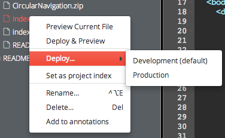
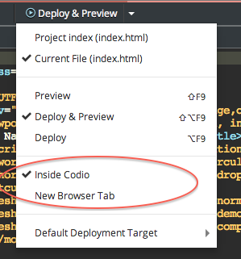

Preview
Codio offers a very comfortable way to Preview your applications. You can find the Preview in the menu bar. If you have selected the Deploy Before Preview option the button label will be Preview & Deploy.
When you press the button, the Preview will execute and, if Deploy & Preview was selected first, the project will be deployed to the default deployment target (although this should only be used with RSYNC type deployment targets as others will be slow for larger projects).

If you right-click a file in the file tree, you can see that you can also Preview or Deploy & Preview.

What to Preview
When you press the menu bar Preview button, Codio can preview in one of two ways
- Project Index : by default, this is the index.html file, but you can specify any file to be the project index file by right-clicking on the index file and then selecting 'Set as Project Index'.
- Current File : this will preview the currently open file; if you are using a remote server (PHP, Node etc.) then you may want to set the Deploy before Preview option, which is described below.
You can switch between Project Index and Current File by selecting the dropdown and setting the appropriate option.

Deploy before Preview
VERY IMPORTANT : if you are going to use this option, you should make sure that you are using an RSYNC deployment target type. If you don't, then each time you execute a deploy and preview, your entire project will get deployed rather than just modified files.
If you are using an FTP remote server, then you should deploy only specific files and folders.
If you are working on a file that requires deployment to a remote server (a PHP, Ruby or Node file for example), then you will probably want to select the Deploy Before Preview option from the Preview dropdown menu. This will ensure that the file is properly deployed to the remote server before the preview.
When you check the Deploy Before Preview option in the dropdown, you will see that the button label changes from Preview to Deploy & Preview.
Default Deployment Target
When you select the Deploy Before Preview option, Codio needs to know which deployment target to use. You can set the default target from the Preview dropdown menu or from Tools > Deployment > Manage Targets.
Deployment targets are covered in detail in the Deployment section. Again, use the RSYNC target type whenever possible.

Base Path
If you are not previewing an html file and you have set up a deployment target for a remote server, then make sure you have specified the Base Path field in the deployment target.
Preview in a Codio tab or new browser tab
In the Preview dropdown menu, you can select one of the following ways to preview
- Inside Codio : displays the preview in a Codio tab
- New browser tab : it will open up a new browser tab or window.

Popup Blocking
With Deploy & Preview, Codio needs to invoke the Preview only after the deploy is complete and so this is necessarily done using Javascript. As a result, your browser's ad-blocker will likely intercept this and you will need to allow the browser to popup a new tab for Codio. In most cases, it will also display this in a new browser window rather than tab. This is beyond Codio's control.
Private Projects
When you preview a private project, you will be prompted to enter your Codio user name and password in order to protect 3rd parties from accessing your project in preview mode. If you signed up with GitHub and did not set a password, then you can do this from the Codio > Account menu option. You can check your user name on the profile tab.
Your back-end server does not run https
If you want to preview your application at a remote url and that application runs under http, and not https, then your browser security will consider this as being insecure content. When previewing, Codio detects this and will automatically preview in a new browser tab in order to avoid these errors.
If it is important to you to preview in a Codio tab, then you will have to install an SSL certificate on your remote server and run your application over https.
Insecure Content with In-Tab preview and front-end code
Codio runs over https and the inline preview runs over https, too. If your code references an external resource (script, font, image etc.) such as
<script src="http://code.angularjs.org/1.1.5/angular.js">
then you will get a browser error indicating that there is some form of insecure content because you are running in a mixed http/https mode.
There are 3 ways to avoid this
- expand the inline preview into a new browser tab (icon is in the small floating toolbar in the top right of the preview tab) and then modify the url from
https://codio.io/xxxxtohttp://codio.io/xxxx - modify your external references to https
- modify your references to use the 'current protocol' by including '//' without http or https, so
<script src="//code.angularjs.org/1.1.5/angular.js"> - if none of the above work, then get the external file then include and reference it within the Codio project itself